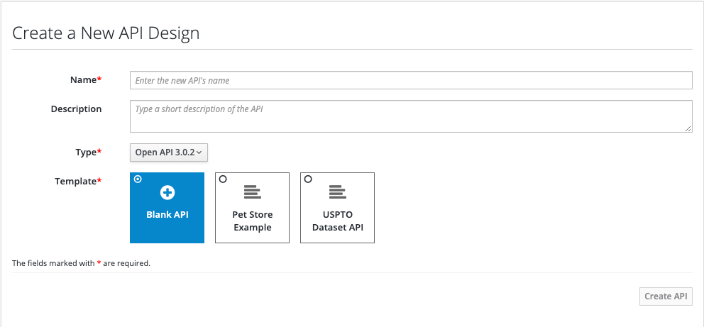
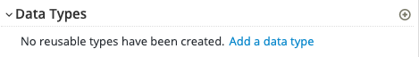
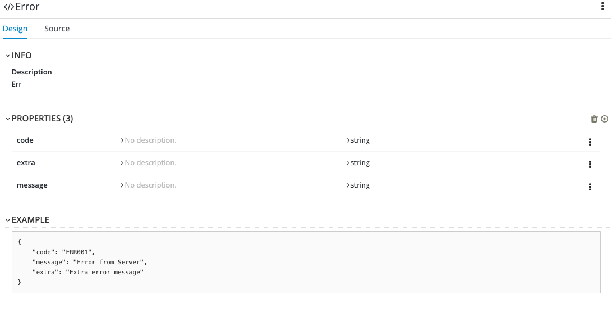
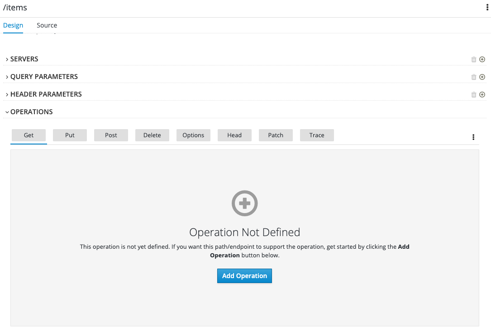

Introduction
In this exercise, you will define the API to be used for the todolist application using Apicurio.
Apicurio Studio , maintained by the Red Hat Developer Program, is a tool for designing APIs that follows the specification without requiring the developer(s) to be intimately familiar with it. It provides a GUI for defining all aspects of the API. Ultimately, Apicurio outputs both human and machine readable documentation which complies with the latest version of the OpenAPI specification.
Step 1 - Create an account
APICurio offers a SaaS option located at https://studio.apicur.io. Please create an account by Clicking the "Register" button or using an Identity Provider like Google or GitHub.
Step 2 - Explore Apicurio
As soon as you are logged into APICurio you will see three main sections.
- Dashboard (Overall overview, Activity and Recent APIS).
- APIs
- View all APIs (Lists the APIs owned and shared with you)
- Create new API (Allows the creation of a new API)
- Import API (If we have already one API, we can import it and manage in APICurio)
- Settings (Custom Settings, Linked Accounts)
Step 3 - Explore requirements for todo-list API
The API should expose endpoints with following data models:
- Data Models:
- Error
- code: string
- extra: string
- message: string
- Item
- id: string
- name: string
- description: string
- Error
- Endpoints:
- GET /items
- Operation ID: getItems
- Response:
- Code 200, application/json, Array of Items
- POST /items
- Operation ID: createItem
- Request Body: application/json, Item Object
- Response:
- Code 201
- GET /items/{itemId}
- Operation ID: getItem
- Response:
- Code 200, application/json, Item
- PUT /items/{itemId}
- Operation ID: updateItem
- Request Body: application/json, Item Object
- Response:
- Code 202
- DELETE /items/{itemId}
- Operation ID: deleteItem
- Response:
- Code 204
- GET /items
Step 4 - Define the todo-list API specification with Apicurio
4.1 Go to section "APIs" and click "Create New API"

- Name: Todo API
- Description : ToDo API specification
- Type: Open API 3.0.2
- Template: Blank API
4.2. Edit the API and in servers section, Add a new server:
- Server URL: http://localhost:8001/api/v1
- Description: Local Env Server
- Click "Save"
4.3. Define the Data Model Error by clicking on Add a data type link

- Name: Error
- Description: Error Object
- Enter JSON Example:
{ "code": "ERR001", "message": "Error from Server", "extra": "Extra error message" } Choose to create a Rest Resource with the Data Type: No Resource
Note: if you click Rest Resource, creates automatically all the paths and methods required to manage the Error data model, this is useful for the
Itemdata model but you are not going to use it. All the creation will be made manually to gain more experience.Click "Save" button. 
Additionally you can add description for
Errordata model.
4.4. Likewise define the Data Model Items by clicking on Add a data type link again
4.5. Next, create an API path(endpoints) /items by clicking on Add path link

- Enter the path: /items
- As soon as the popup is closed you can see the new path. In the detail page, you are going to add some extra information and enable the GET operation.
- Info section:
- Summary: Path used to manage the list of Items.
- Description: The REST endpoint to list and create
Itementities. This path contains aGETandPOSToperation to perform the list and create tasks, respectively.
- Operations section:
- Under the tab "Get" , click "Add Operation" button. 
- And fill the following sections:
- Info:
- Summary: List All Items
- Description: Gets a list of all
Itementities. - Operation ID: getItems
- Responses:
- Add a response.
- Add 200 Status code.
- Description: Successful response - returns an array of
Itementities. - Response Body: Add Media Type -> Application/json -> Type:
ArrayofItem.
- Description: Successful response - returns an array of
- Add 500 Status code.
- Description: Error response - returns an object of
Errorentity. - Response Body: Add Media Type -> Application/json -> Type:
Error.
- Description: Error response - returns an object of
- Add 200 Status code.
- Add a response.
- Info:
- Info section:
4.6. Likewise, please add the rest of the endpoints based on the requirements mentioned in step 3.
You can find the complete specification here